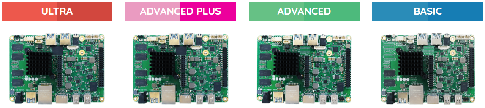
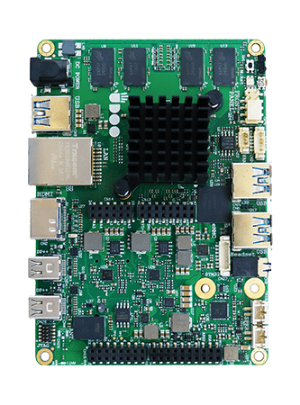

Introduction
UDOO X86
UDOO X86 is the New PC: the most powerful maker board ever and an Arduino™ 101-compatible platform, all embedded on the same board.
On UDOO X86 you can run all the software available for the PC world, from gaming to video streaming, from graphical editors to professional development platforms, plus all the software for the Arduino™ 101 world, including all the sketches, libraries and the official Arduino™ 101 IDE.
UDOO X86 embeds two processors made by Intel®:
- a Quad Core 64-bit new-generation x86 Braswell 14nm processors, designed for the PC domain (The N-Series Intel® Pentium® / Celeron® and x5-Series Atom family of System-on-Chips (SoCs) formerly coded as Braswell is a series of Quad Core SoCs with 64-bit instruction set and very low TDP).
- the Intel® Curie™ module, the same of Arduino™ 101, designed for wearables.
While the X86 Braswell processor can run all the Windows, Linux, Android X86 64bit Distros you want to use as desktop PC, the Intel® Curie™ allows easy access to a Arduino™ 101 environment.
Download the User Manual to have more complete explanation of the UDOO X86 hardware.
Visit the Get Started X86 section of the UDOO website to find video tutorials of how to start use the UDOO X86 board.
This is the documentation for the first revision of the UDOO X86 board with Arduino 101-compatible microcontroller with Intel® Curie. A new revision of the UDOO X86 board has been released.
If you have the UDOO X86 II revision in your hands, please consult the UDOO X86 II doc at this page. Check how to recognize the UDOO X86 revision.
Heads up! In order to prevent damages to your board, remember to:
- Never provide more than 3.3V in input to the GPIOs of the Arduino 101(Intel® Curie™), and never provide more than 1.8V in input to the GPIOs of the Braswell processor.
- Never keep the board in touch with metal objects or surfaces while it is powered up
- Power the board with a stabilized power supply (DC-jack with a standard 5.5mm/2.1mm barrel jack, internal positive, Voltage 12V ± 5%, at least 3A).
- Do not use a NON-standard USB 3.0 peripheral. If you use a non-standard USB 3.0 peripheral with an external power plug, this could send back the power source to the UDOO X86 board with the risk of damage.
Lineup
UDOO X86 retail line up consists of two models.
Technical specifications
- Processor:
- CPU Intel® Pentium N3710 up to 2.56 Ghz (ULTRA version)
- CPU Intel® Celeron N3160 up to 2.24 Ghz (ADVANCED PLUS)
- GPU:
- Intel® HD Graphics 405 up to 700 MHz 16 execution units (ULTRA version)
- Intel® HD Graphics 400 up to 640 MHz 12 execution units (ADVANCED PLUS)
- RAM:
- 8 GB DDR3L Dual Channel (ULTRA version)
- 4 GB DDR3L Dual Channel (ADVANCED PLUS)
- Intel® Curie™ module (Quark SE core 32 MHz plus 32-bit ARC core 32 MHz) features Bluetooth LE, 6-axis accelerometer/gyro
- Video interfaces:
- 1x HDMI 1.4 (CEC)
- 2x Mini DisplayPort ++ (mDP++)
- Storage:
- 32GB eMMC soldered on-board (Advanced Plus and Ultra only)
- 1x M.2 Key B 2260 slot for SATA SSD modules** / PCIe (2x) modules
- 1x SATA III 6Gb/s connector
- 1x MicroSD slot
- Networking:
- 1x Gigabit Ethernet LAN interface
- 1x M.2 Key E slot for optional Wireless(WiFi+BT) Module
- Audio interfaces:
- HD Audio Codec ALC283CG
- Microphone + Headphone Combo Connector (TRRS)
- Pre-amplified stereo speaker output
- S/PDIF output*
- 3x USB 3.0 type-A sockets
- 2x HSUART ports*
- 2x I2C interface*
- 1x SDIO interface*
- 1x LPC interface*
- 12V (± 5%) DC Power Jack (standard 5.5mm/2.1mm barrel jack: internal positive), at least 3A.
- RTC Battery Connector + RTC Coin Battery
- Bi-color Power Status LED
- 1x Sensor Snap-In I2C connector (UDOO Bricks)
- Arduino™ 101-Compatible through the standard Arduino™ Pins layout and compatible with Arduino™ shields.
*Available on Pin Header **Not compatible with NVMe modules
Visit the official accessories sections.
Community
- Official web site www.udoo.org
- Official forum www.udoo.org/forum
Forums
The official UDOO forums can be found at www.udoo.org/forum
The forum search facility has been tweaked to allow more general searching. Please do a search before making a post as the issue may already have been raised and answered.
IRC channel
There is an (unofficial) UDOO discussion channel on IRC. Using the IRC client of your choice, use server information: irc.freenode.net. Room name is #udoo.